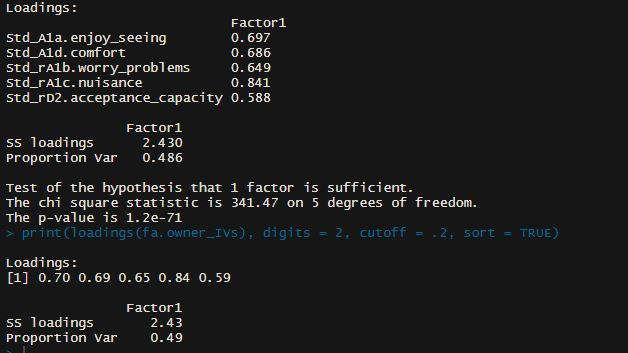
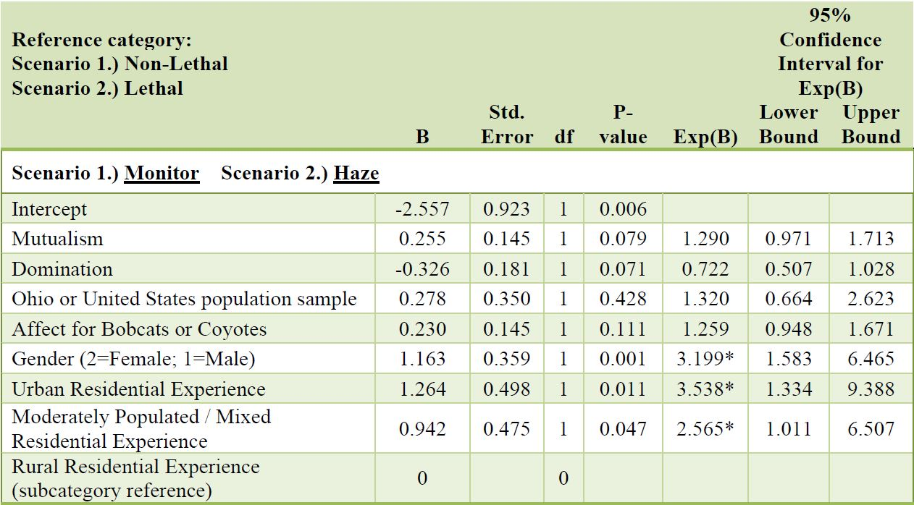
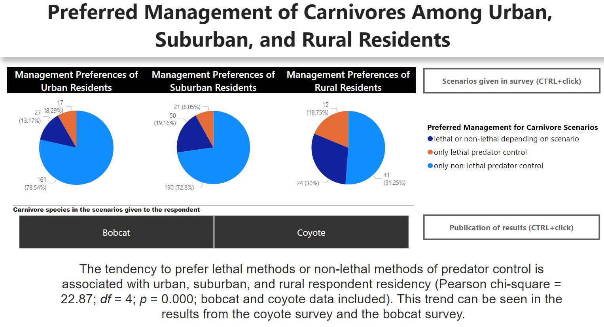
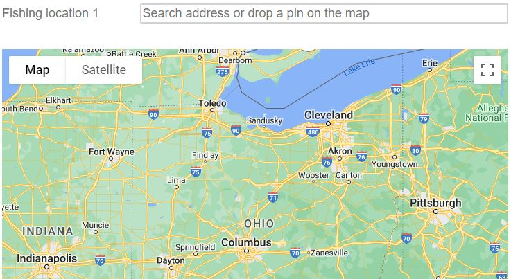
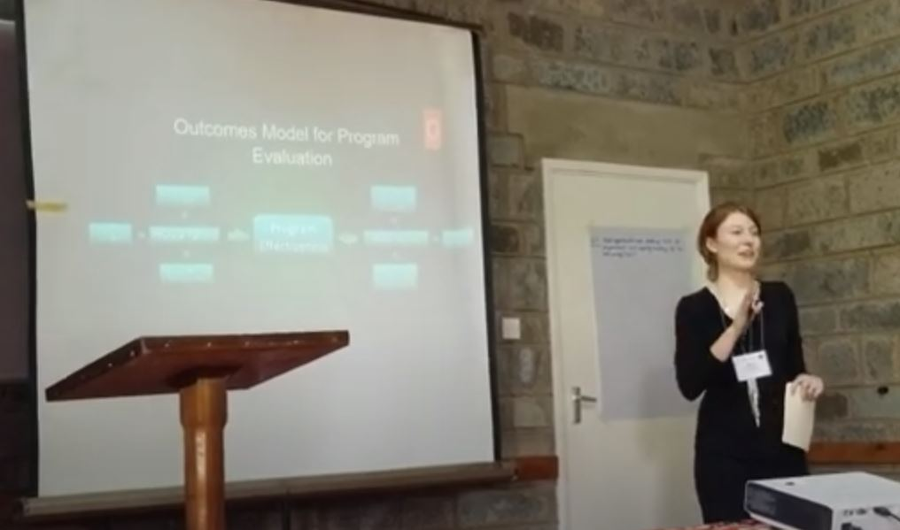

I assesed factors of tolerance for Ohio deer population levels using exploratory factor analysis, confirmatory factor analysis, linear modeling, and an AIC model comparison within R.

This is the SPSS syntax I used in Chapter 2 of my master's thesis. It includes the filters I used to clean my data, multinomial logistic regression candidate models, and part of the assumption testing for multinomial logistic regression.

I created a dashboard in Power BI using data from two surveys to visualize carnivore management preferences for urban, suburban, and rural residents.

I created a Qualtrics survey that was used to gather data needed to perform an economic evaluation of fisheries in Ohio for Ohio Division of Wildlife (government agency). To display a longer version of the survey preview, please answer “Yes” to the question “Have you gone fishing in Ohio in the past 12 months?”

PowerPoint and presentation recording of my work evaluating an Ohio governement run program for connecting hunters with private land access.
*Presented at the Human-Dimensions of Wildlife Research Pathways Conference in Kenya, Africa.